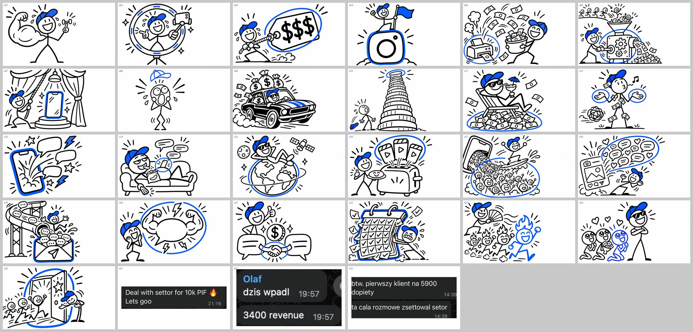

Odsłuch angielskiego VSL
Nowe CTA w VSL PL, Twój klon (do akceptacji)
Kolejność: stare zdania 1 i 2, cisza, nowe 1 i 2 klonem, cisza, stare zdanie 3, cisza, nowe zdanie 3. Nowe CTA prowadzi do WhatsAppa pod wideo.
Nowe rysunki do intro (do akceptacji)
Jeden bohater w niebieskiej czapce, każdy slajd to gag. Slajd 9: ucieczka z kasą muscle carem. Ostatni rząd: testimoniale (złotówki i nieczytelne paski wypadają).

Intro v7 (poprawiona gramatyka i styl): wybierz wersję
Wersja 1 (36,7 s)
Wersja 2 (36,1 s), domyślnie idzie do filmu
Intro ze slajdami (37 s, 26 slajdów w stylu strony)
Intro (wersja 6, stabilność 53, wygenerowane 00:08)
Cały VSL: intro + 6 bloków (7:55, Eleven v4, stabilność 0,53)
Samo audio, jeszcze bez obrazu i dopasowania do filmu.